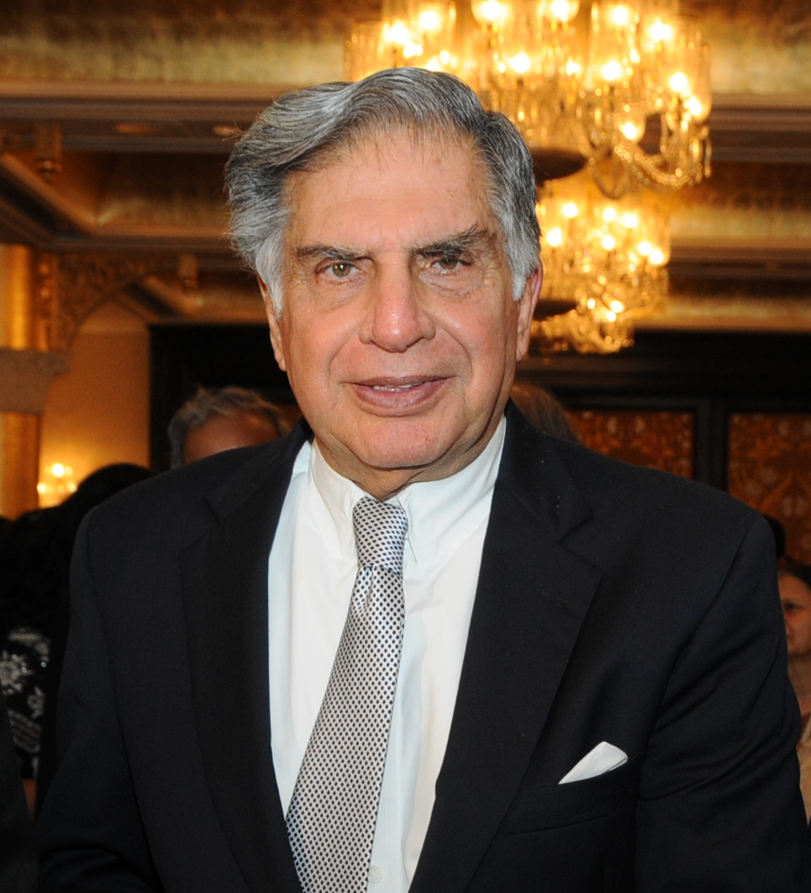

|  |
Ratan Naval TataRatan Naval Tata was an Indian industrialist and philanthropist. He served as the chairman of Tata Group and Tata Sons from 1991 to 2012 and he held the position of interim chairman from October 2016 to February 2017. |
| Name Of The Company | Description |
|---|---|
| Tata Consultancy Services | TCS offers services such as business process outsourcing, application development, enterprise software, hardware sizing, capacity planning, consulting, payment processing, software management, and technology education. |
| Tata Steel | Tata Steel was the first integrated private steel company in Asia. It developed India's first industrial city, Jamshedpur, where its first steel plant began production in 1912. |
| Communication Skills ***** Leadership Skills ****** |
Learnablility ******* Flexibility ***** |